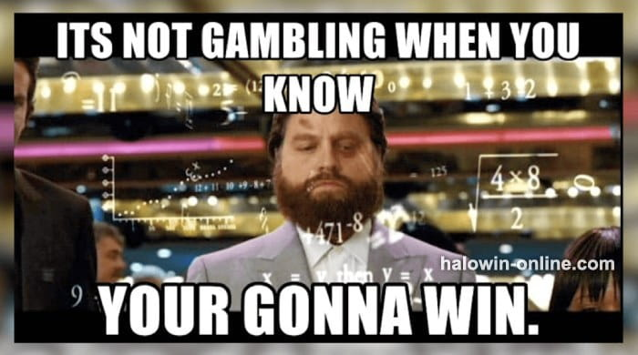

5 Paraang Manalo sa Baccarat Online, Paano Maglaro ng Baccarat
Ang Bacarract online tip na ito ay mula sa karanasan ng isang master player, hindi lang siya nabubuhay sa pagsusugal ngunit siya din ay nirerespesto ng maraming manlalaro ng baccarat. Tignan natin kung paano maglaro ng baccarat!
Game Introduction
Naniniwala ang EsballPH HaloWin Tagalog Casino na ang mga tapat na manlalaro na gusto ang baccarat ay kailangan mayroong tukoy na estratehiya sa pagtataya at istilo ng paglalaro ng baccarat. Madalas pinaguusapan ng mga manlalaro kung anong set ng istilo ng paglalaro ng baccarat ay may pinakamataas na winning rate. Para sa mga maaalahaning mga matatandang manlalaro na nasa Knorr poker table, hindi sapat ang umasa sa mga karaniwang gawain. Kung wala silang karaniwang pag-iisip at mga natatanging kaalaman, wala silang pinagkaiba sa mga ordinaryong manlalaro.
Paano Maglaro ng Baccarat Online

Ang Bacarract online tip na ito ay mula sa karanasan ng isang master player, hindi lang siya nabubuhay sa pagsusugal ngunit siya din ay nirerespesto ng maraming manlalaro ng baccarat. Tignan natin kung paano maglaro ng baccarat!
Baccarat Game 1: Baccarat na Tie ay Tulad ng Pagkikita ng Iyong Ex, Huwag Itong Pansinin!
Maaaring ikaw ay nagtataka kung bakit hindi ka pwedeng tumaya sa isang tie game. Hindi ba ito ang karaniwang betting area sa baccarat? Madalas draw ang mga resulta, ngunit ang unang tick sa baccarat play ay ang sabihin sa lahat ay kapag nakakita ka ng draw, itulad ito sa kapag nakita mo ang iyong ex-girlfriend sa labas. Huwag na alalahanin ang mga magagandang alaala niyo at magkunwaring wala kang nakita. Ikaw ay agad nalang lumayo!
Sa maraming manlalaro ng baccarat, basta ikaw ay may kaunting karanasan dito, alam nila na hindi pansinin ang basic na konsepto ng isang draw. Kapag maingat itong kinalkula sa probability ng mga opening card, kapag tumaya ang manlalaro sa banker, ang lamang ng casino ay nasa 1.06%, at kapag tumaya na ang player sa player, ang lamang ng casino ay nasa 1.27%, na nangangahulugan na kapag tumaya ng 100 yuan ang player ay mawawalan ng $1.06 (banker) o $1.27 (player).
Sunod, kapag tumaya ang player sa isang tie, ang lamang ng casino ay tataas sa mataas na rate na 15%. Naniniwala akong naiintindihan nyo kung bakit kailangan nyong hindi pansinin ang tie kapag nakikita ito, dahil kapag ikaw ay nagtataya ng 100 yuan, ikaw ay mawawalan ng 15%. Ang yuan, kapag titignan ito ng matagalan, ang mga naipon na lugi ay dapat ikonsidera.
Hindi lang malaki ang panganib nito, ngunit ang mga resulta ng draw ay hindi makatwiran na pagsanggunian. Kasabay nito, mahirap sa mga manlalaro na obserbahan ang mga tuntunin at mga pagbabago sa laro gamit ang sarili nilang paraan at istilo ng paglalaro.
Samakatuwid, ang pangunahing konsepto na sinasaad ng first move ng baccarat ay imungkahi na maglaro lamang ng baccarat sa kinabukasan. Ang mga betting block ng dalawang teams ay sapat na, kahit ano pa man ang resulta ng mga draw, at patuloy na mananatili ang kanilang sariling rhythm.

Baccarat Game 2: Kung Mali ang Timing ng Raise, Mawawala ang Lahat!
Ang "raise" ay isang pinakakaraniwang execution action sa maraming mga poker game, at ito ang susi sa unti-unting paglaki ng chip size ng player. Gaya ng 21 points, ang raise ay isang aksyon na talagang nakatakda sa laro.
Gaya ng Texas Hold'em, ang mga player ay malayang makakapili kung palalakihin nila ang kanilang taya sa bawat round, at ang laro ay matutukoy sa pag-raise ng single player ay makakagawa ng unti-unting pagbabago sa laro.tand
Gayunpaman, sa laro ng baccarat, walang action setting sa pag-raise, at maaari lang palakihin ng player ang taya. Samakatuwid, ang pag-raise ay maitutulad sa laki ng kabayaran nito.
Ito na ang importanteng punto, dahil ang pag-raise sa baccarat ay base lang sa personal mong pagpapasya, kaya kapag ikaw ay pumili ng maling oras para mag-raise sa laro, maaari kang malugi ng malaki.
Simple lang ang rason sa pagpili ng oras sa pag-raise. Tandaan na ikaw ay dapat manalo ng mas maraming chips, bagkus, kailangan na tandaan din ang dami ng bilang ng pagkalugi kapag ikaw ay natalo.
Kailan ba ang tamang oras sa pag-raise ng taya? Sa madaling salita, kapag nag-umpisa na ulet ang laro o kapag palaging lumalabas ang pagbukas ng banker at idler sa laro, hindi inirerekomenda sa mga player ang pag-raise ng taya.
Ang timing na pinipinili ng maraming manlalaro ang pag-raise ng kanilang taya ay kapag may naengkwentro silang long-term banker o isang long-term player, dahil sa probability calculation ng baccarat, kapag pareho ang resulta sa 5 o higit pang mga 5 round, ang probability na lalabas ang iisang resulta ay magiging malaki.
Gayunpaman, ang iba't ibang player ay palalakihin ang kanilang taya sa isang laro gamit ang iba't ibang paraan sa paglalaro, ngunit kung hindi ikaw pamilyar sa sitwasyon ng laro, magandang gumamit lang ng isang konserbatibong paraan ng paglalaro upang tumagal sa laro. Kung hindi, kapag hindi maganda ang timing ng pag-raise, baka mawalan ka na ng uuwian.
Baccarat Game 3: Ang Banker ay ang Iyong Spiritual Mentor!
Mayroong basic probability na konsepto sa mga gambling games, at ito ay ang winning rate na banker na 51%, at ang winning rate ng player ay 49%. Ito ang mga pipiliin na may pinakamataas na probability na manalo ang player.
Pagkatapos ang matagal na paglalaro sa laro, ang pagtaya sa banker ay sadyang makakapanalo sa iyo sa marami pang mga laro. Tulad ng isang maliawanag na ilaw sa madilim na gabi, ang pagsunod sa direksyon ng dealer ay magdadala sa iyo sa maliwanag na langit. Maaaring ikaw ay madulas sa prosesong ito, ngunit ikaw ay sasaya sa dulo nito.
Baccarat Game 4: Kumapit sa Winning Strike!
Ang bawat player na seryoso sa baccarat game ay nag-aabang sa tamang panahon kung saan dadami ang mga naipong chips. Kapag umalis na tayo sa table sa wakas, ang mga chips ay mas madami pa sa naunang halaga.
Kung gusto mo magkaroon ng oportunidad na palakihin ang iyong chip size sa baccarat, kailangan alamin ang timing ng iyong raise.
Ang ikaapat na trick mula sa mga sikreto ng baccarat ay isang advanced extension ng pangalawang trick. Gaya ng sinasabi sa itaas, kung hindi pumili ng magandang timiing sa pag-raise, ang player ay malulugi ng malaki, ngunit kung maganda ang iyong timing, magbabago bigla ang sitwasyon. Ang pangunahing punto ng ikaapat na trick ng mga baccarat tips ay tungkol sa tamang timing ng pag-raise ng taya.
Kapag naengkwentro mo ang state na winning strike ng Banker o Player, ito ang tanging pinakamagandang oras ng pag-raise ng taya. Gayunpaman, ang lahat ay kailangan maging maingat magpasya ng maayos. Kapag ikaw ay hindi na tumigil sa pag-raise ng higit pa sa sampung round, ito ay masisira.
Here, it is recommended that it is more suitable to execute raising at the beginning of this winning strike, and even if you raise your bet, DON'T lose your sense of proportion when winning, and return to the original rhythm according to the situation is a stable operation.
Baccarat Game 5: Flick Fast When the result isn't What You Expected
If you are not a banker, you can make a sharp turn! Because no matter how long a player operates in a baccarat game, the result of the opening card is always banker or player (ignoring the draw). But what is the concept of a sharp turn?
Let us give an example. If you choose to bet on the player in this round, but the dealer wins after the card is drawn, please hold your breath and hold your steering wheel firmly in the next round. The dealer goes.
Remember, the premise of choosing to use this trick is that when the card opening situation is very loose and uncertain, sometimes the banker is opened and sometimes idle, not only there is no dragon and no pattern can be observed.
But also, it is recommended to execute more than half of the number of rounds before starting Judgment (6~8 decks of cards are used in baccarat's card boots), if the amount of information available for reference is not enough, blindly making sharp turns will only increase the risk, and irregularity is also a rule! keep it in mind.
EsballPH HaloWin Tagalog Casino's suggestions on how to play baccarat are the 5 above, many players blindly pursue high winning rate skills, and they do not have the most basic concept of baccarat itself, nor do they have the correct concept of betting.
Disappeared in the poker circle. Finally, everyone must remember that there is no 100% winning technique in any game, and there is no one style of play that can interpret all the situations in the game.
Therefore, whenever you encounter the appropriate situation that you can't deal with, the basic betting concept and emotional control ability will determine the length of your life at the poker table, so when learning various baccarat ways, please always remind yourself to stay calm Calmness and introversion are the playing skills with the highest winning rate!
Ang EsballPH ay ang pinakamahusay na laro ng slot online casino sa Pilipinas.
Pagkatapos mag-log in, maaari mong tangkilikin ang new member register free 100 ngayon.
Simula sa 2024, maaari kang makakuha ng 100 free bonus casino no deposit philippines.
Bilang karagdagan, mayroon kaming iba pang mga diskwento at mga hangganan na naghihintay para sa iyo na mag-claim kaagad.
You can also click to enter the Online Casino Bonus & free 200 promotion introduction, which provides more diverse casino bonuses.
Baccarat na Strategy


, Magbibigay sa iyo ng Pangmatalagang Kita")